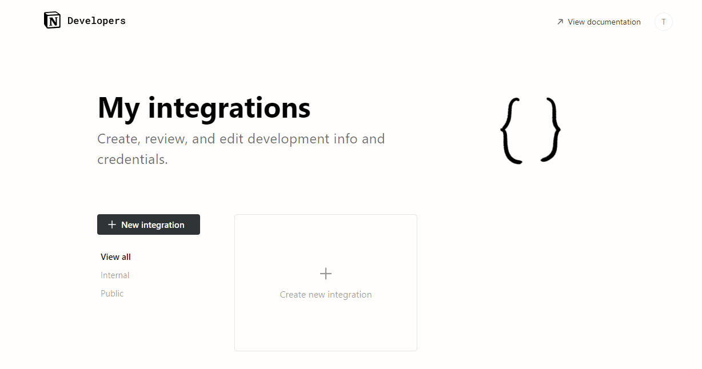
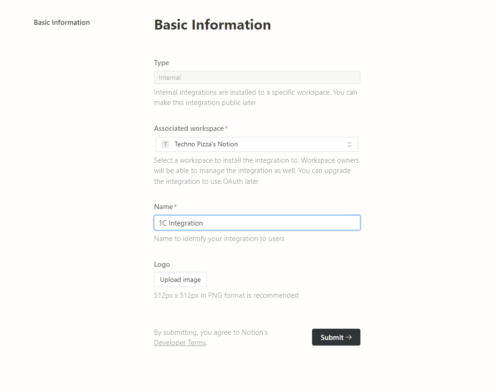
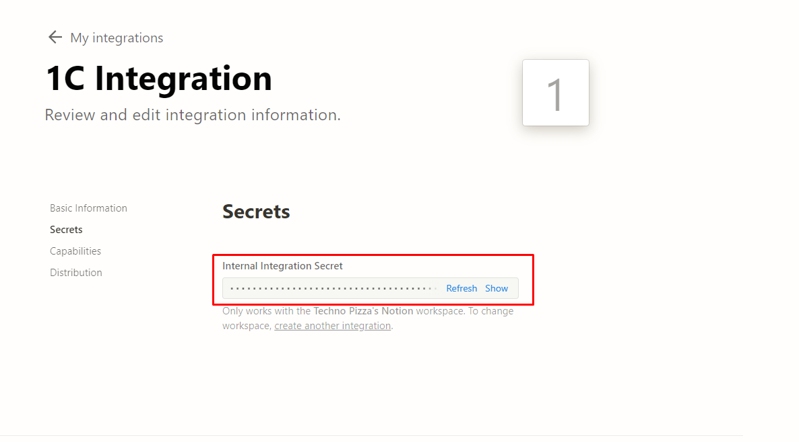
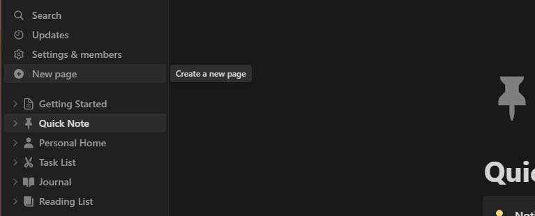
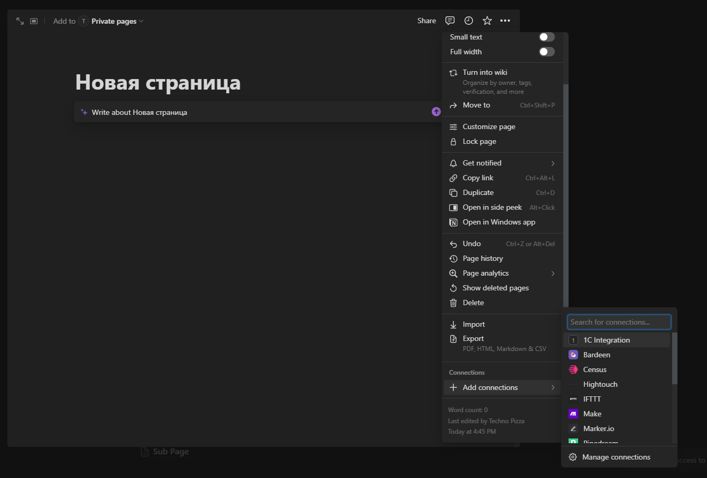
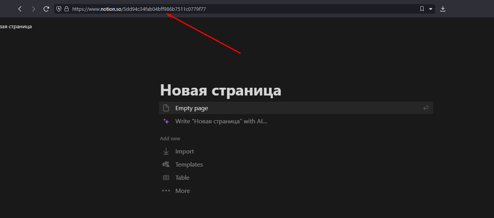

![]()
Notion
Этот раздел посвящен библиотеке для работы с Notion API в 1С:Предприятие, OneScript и CLI. На данной странице описаны все действия, необходимые для полноценного начала работы
Начало работы

- Введите название вашей интеграции

- После завершения создания интеграции, нажмите Show и скопируйте Токен (Secret)

- Перейдите в основной интерфейс Notion и создайте новую страницу. Эта страница будет родительской для всех остальных объектов, создаваемых через API

- Нажмите три точки в правом верхнем углу и в самом низу найдите пункт Add connections. Выберите там свою интеграцию из пунктов 1-3

- Получите ID этой страинцы. Это можно сделать нажав Share -> Copy link или просто скопировав из URL

Токен и ID страницы - два параметра, необходимые для работы через API